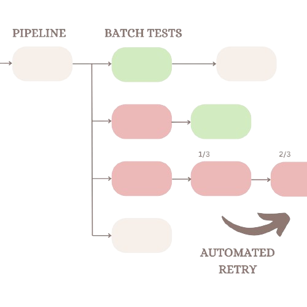
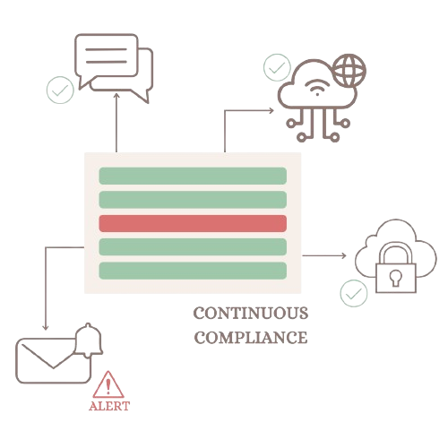
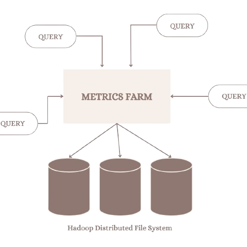

Hello, I'm Kelly!
I'm an aspiring software engineer from NYC, currently pursuing a Bachelor's in computer science at the University of Michigan. Within tech, I'm interested in data science, machine learning/ AI, and full stack application development. Through numerous software engineering project experiences, I am actively cultivating and expanding my skillset to enhance my proficiency within these fields.
I have interned at various companies including Splunk, Riot Games, and PNC Financial Services. Additionally, I lead the CARLA Driving Simulator project team at the University of Michigan and I am a peer advisor under the Multidisciplinary Design Program. In the past year, I also developed an interest in attending hackathons; I love collaboration and the excitement of building a product from scratch and seeing ideas come to life!
When I'm not coding, you could find me dancing (check out my dance team, K-Motion), working out at the gym, or doing a variety of arts and crafts. I love painting and bullet journaling, and I recently started making polymer clay figurines.
Thanks for visiting ᵔ ᴗ ᵔ Feel free to check out my projects and contact me below if you'd like to chat!
Experience
Automated Retry of Failed Pipeline Tests
Jan 2024 - April 2024 | Remote
Description: With thousands of tests run during the triaging period, analyzing individual failed tests becomes a time-consuming and resource intensive task. The reason for failure may be due to issues with the build and not with the test cases themselves, in which case, engineers would manually re-run the individual tests again to figure out the cause of failure. The automated retry mechanism reduces the manual efforts of engineers and accelerates the triaging process by automatically running a test again if it meets a particular threshold of errors and/or failures. Throughout my internship with Splunk, I implemented this automated retry mechanism as a script and integrated it with Splunk's internal testing pipelines.
Python
Gitlab
Argo
YAML

Continuous Compliance Dashboard
Jan 2023 - Dec 2023 | Remote
Description: Partnering with Riot Games and the Multidisciplinary Design Program, I worked in a team alongside 6 other students to design and implement a full-stack security application that continuously monitors and flags any non-compliant (and potentially malicious) activity within the company's internal systems. The system is extensible, as security engineers are able to add more scripts to the system to check for new security policies. Additionally, the system is integrated with Slack so security engineers can be notified whenever a flag is raised. With this application, many manual workflows are reduced, allowing security engineers to focus on greater security priorities as the company continues to grow.
Python
React.js
PostgreSQL
AWS

Metrics Farm
May 2023 - Aug 2023 | Pittsburgh, PA
Description: Over the course of 10 weeks, I worked on implementing a system that continuously monitors for functional metrics regarding PNC's transactional processing procedures. I orchestrated data pipelines to continuously persist metrics data from distributed data stores to a centralized database, based on queries submitted by a business analyst. By having the metrics persist to a centralized database, the data could then be consumed in a variety of ways, which include viewing the data from a user interface or other platforms like Tableau. Ultimately, analysts would be able to view metrics data in a more streamlined way, allowing them to discover insights more easily and effectively.
Python
Apache Spark
Hadoop
SQL

Projects
-
ZenStock
Project for MHacks XVI (Nov 2023) | 3rd place Best Financial Hack
An AI-powered investment application that utilizes natural language processing and sentiment analysis of weekly financial news articles to make real-time stock market recommendations. ZenStock aims to help users navigate the complexities of the stock market and make more informed decisions based on current events.
PyTorch Hugging Face React.js -
Chiron
Project for Google x MHacks AI Hackathon (April 2024)
A web application driven by AI that customizes summaries of ongoing clinical trial data based on a user's depth of medical expertise and purpose in seeking the information. This application was created to address the information asymmetry between patients and clinical trial data, and seeks to provide more understandable information to any user who wants to learn more about a medical condition.
Gemini 1.5 Pro Python Flask React.js
-
CARLA Driving Simulator
Multidisciplinary Design Program Project Team (Jan 2022 - Dec 2022) | Leader
As a member of the project team, I developed features to enhance the CARLA driving simulator for human factors research on driver workload, driver distraction, and driver interfaces for partially automated vehicles. For instance, I worked on doubling the efficiency of conducting experiments on the simulator by combining two different driving scenarios (intersection and freeway), which were originally developed on separate interfaces, into a single backend infrastructure. Additionally, I designed realistic virtual worlds to test different driving scenarios for the simulator, developing proficiency in computer aided design and various application software.
As a leader of the project team, I made sure that the team engaged in productive weekly meetings and that the team's progress aligned with our long-term project roadmap. With around 30 members in our team, I strived to create an inclusive and stress-free environment by encouraging open discussions and by hosting game nights to foster team bonding. Additionally, I created a project management spreadsheet to help our team keep track of their progress in order to meet key milestones and objectives. These initiatives helped to make our team meetings effective, allowing our team to make significant advancements to the driving simulator.
CARLA Python Fusion 360 (CAD) Roadrunner -
Instaclone
blah blah
-
askUM
blah blah
-
SocialSVM
blah blah
-
Canine Classifier
blah blah
-
Thread Library
blah blah
-
Network File System
blah blah
-
Pager
blah blah